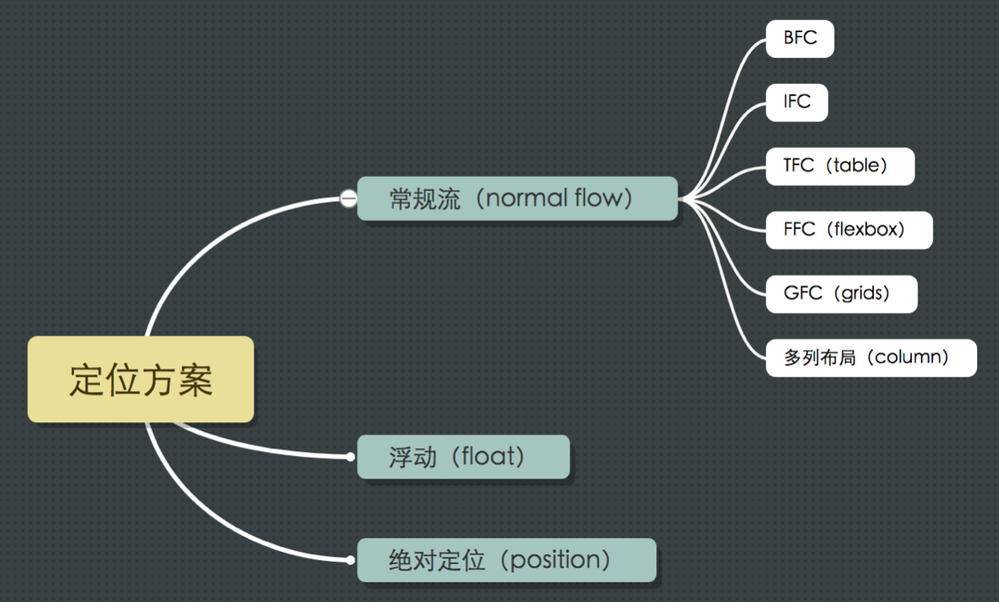

定位方案简述
一旦盒生成了，就要开始指定它们的位置。这将会用到以下三个方案之一：

- 常规流（normal flow）：盒一个接一个排列，不同的盒子采用不同的格式化上下文渲染。
- 浮动（float）：盒将脱离常规流，放在当前盒的旁边。
- 绝对定位(absolute positioning)：盒将脱离常规流，其坐标是绝对的（通过 top / bottom / left / right 来设置）。
常规流（normal flow）
默认盒的定位方案就是常规流，但是如果触发了以下任何一个条件，将不会使用常规流：
position的值非static或relativefloat的值非none
在常规流中，不同的盒子将采用不同的格式化上下文（formatting context）渲染。
具体介绍可学习格式化上下文
浮动（float）
对于浮动定位方案, 盒称为浮动盒（floating boxes）。它位于当前行的开头或末尾。这导致常规流环绕在它的周边，除非设置 clear 属性。
要使用浮动定位方案，元素 CSS 属性 position 必须为 static 或 relative，然后 float 不为 none 。如果 float 设为 left, 则浮动定位到当前位置的开始位置，如果设为 right, 则浮动定位到当前位置的最后位置。
具体介绍可学习：float。
绝对定位（absolute position）
如果元素的属性 position 不是 static 或 relative， 那它就是绝对定位元素。
对于绝对定位方案，盒从常规流中被移除，不影响常规流的布局。 它的定位相对于它的包含块，定位坐标可通过属性 top、bottom、left、right 来设置 。
固定定位元素(fixed positioned element)也是绝对定位元素，它的包含块是视口。当页面滚动时它固定在屏幕上，因为视口没有移动。
具体介绍可学习：position。